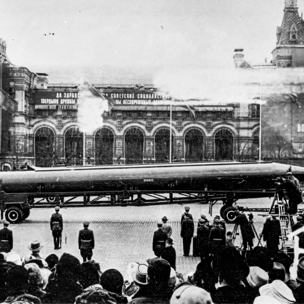

วิกฤตการณ์ขีปนาวุธคิวบา (1962)
-เป็นเหตุการณ์ที่ทั้ง 2 มหาอำนาจโลกได้เล็งหัวรบนิวเคลียร์ใส่เมืองสำคัญต่อกัน สหภาพโซเวียตติดตั้งขีปนาวุธหัวรบนิวเคลียร์ที่มีพิสัยครอบคลุมเมืองสำคัญเกือบทั้งหมดในสหรัฐอเมริกา ทางสหรัฐอเมริกา ด้ตั้งขีปนาวุธจูปิเตอร์ (Jupiter) ขีปนาวุธทิ้งตัวพิสัยปานกลางติดหัวรบนิวเคลียร์ที่ตุรกีไว้ก่อนก่อนหน้าในช่วงเดือนพฤษภาคม 1962 โดยเล็งไปที่เมืองสำคัญของสหภาพโซเวียตเช่นเดียวกัน
-สหรัฐอเมริกาไม่ใช้กำลังโจมตีทันที แต่เลือกใช้มาตรการ "กักกัน" โดยส่งกองเรือรบปิดล้อมน่านน้ำคิวบาเพื่อสกัดเรือสินค้าโซเวียตที่ขนส่งอาวุธ และในวันที่ 27 ตุลาคม เป็นวันที่ตึงเครียดมากที่สุดเรียกกันว่า วันเสาร์แห่งความมืดมิด (Black Saturday) สถานการณ์ตึงเครียดถึงขีดสุดเมื่อเครื่องบิน U-2 ถูกยิงตกเหนือคิวบา และเรือดำน้ำโซเวียตเกือบยิงตอร์ปิโดนิวเคลียร์ใส่เรือสหรัฐอเมริกา
-การเจรจาสงบศึก: สหรัฐอเมริกาและโซเวียตเจรจากันลับๆ จนบรรลุข้อตกลงโซเวียตยอมรื้อถอนขีปนาวุธในคิวบาแลกกับการที่สหรัฐอเมริกาสัญญาว่าจะไม่รุกรานคิวบาและแอบถอนขีปนาวุธออกจากตุรกีในเวลาต่อมา
